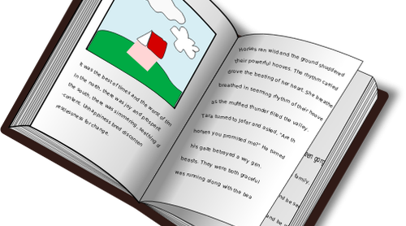

Actividad de lectura
Chicos y chicas, aquí tenéis una historia muy interesante sobre el descubrimiento del fuego. ¿Preparados para disfrutar de esta lectura? Leedla detenidamente comprendiendo todo el texto. Aquí tenéis el enlace para poder disfrutar del cuento.
http://www.cuentoscortos.com/cuentos-originales/el-hombre-del-fuego
¿Qué os ha parecido la historia sobre el hombre del fuego? Muy chula, ¿verdad? 
En esta actividad tendréis que contestar a las preguntas que tenéis bajo. Debéis elegir la opción correcta y el próximo día en clase comentaremos el cuento y las preguntas.